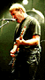
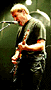

Rush In The Concert Hall!
by The Dude on the Right
photos by The Dude on the Right
My experience with Rush is a simple one - I basically liked the songs I heard on the radio but never made it a point to expand my musical knowledge of the band. They never instilled that "I have to buy the CD the day it comes out" attitude, but I wouldn't change the station when a Rush song came on. But, back when I was in college, I knew this guy who basically thought that the trio that is called Rush might as well be the Father, Son, and Holy Ghost. I didn't realize how many people thought the same thing until I caught Rush's show at The United Center in Chicago.
As the place was filling up I was trying to figure out exactly what could draw such a devout legion of fans to fill up one of the larger indoor venues in Chi-Town, especially since they haven't been out in the public eye in years and their new CD, "Test for Echo," didn't seem to be getting much attention other than "hey, there's a new Rush CD out." I guess I would have to wait about another three hours to figure out what that drawing power is. In the meantime I saw a show, complete with about a gazilion lights, more mirrors than, well, a house of mirrors, a giant video screen, and a stage set-up that included what looked like a cardboard cut-out of a Baywatch dudette, an old-style refrigerator, some old-style blender and milk-shake looking things, and satellite dishes with lasers. Oh yea, there was music too. One thing I found out by seeing Rush live is that most of that radio stuff doesn't do them justice as musicians and music makers. Sure, the show had many of those hits I was used to; your "Subdivisions," "The Big Money," "Free Will," and their latest "Test for Echo," but I got to hear many a many a many a song I have never heard before. And I slowly started to realize just what those 18,000ish fans saw in this band.
 

As I stood and listened and watched I realized that this Alex Lifeson character is one kick-ass guitarist. As I stood and listened and watched I realized that this Neil Peart character plays the shit out of the drums with the best of them (and he can spin a drumstick between his fingers which I always find cool, and he had this drum-set that spun around so it was actually two drum sets, and he never missed a beat). As I stood and listened and watched I realized that this Geddy Lee character, although looking a little aged, still can direct this trio through musical experiences. And you know, as I stood and listened and watched I realized that this crowd knew every word, every beat, and appreciated every ounce of the show that Rush put on. It was cool.
See, for all of you people like me who only know these guys from the radio, I will tell you that you are missing something. And I don't think that even just buying a CD or two will add to that. The ultimate experience to change your attitude about Rush is to be there with the worshipers, follow their lead in the "shoving your fist in the air," "pretending to hit that cymbal crash" moment, and realize that as musicians this band of three can blow away many a band of, well, many.
The band was great, although it did seem like it took a little while for them to get into the music as much as the rest of the crowd, and they had one of the better sound systems I have seen (I really wish I could have surround sound speakers like theirs in my living room!). The lighting effects weren't overbearing, but added just enough, giving a little kick when it needed but not annoying, and if you like a good solo, from guitar to drum, this band puts it out there for you.

I can't really say that I am now a member of the Church of Rush, but I can say I have been enlightened a little. This is a band that radio can never do justice, I guess mostly because the really cool songs are too long. You sure as hell won't hear many stations playing the full blown version of "2112" that the band played at their show. It's too bad.
The band played for nearly three hours - two sets with a "Geritol" break of about 20 minutes in the middle. It was three hours I can honestly say weren't wasted. I only had one problem with the show. Hmm, I don't know if it's a problem, it's just my feelings keep changing from "who cares?" to "What the hell does he need that for? Who's gonna care if he forgets a line, it will just add to this show being more special?" See, Geddy Lee was using a "lyric monitor." Basically a little TV that scrolls the lyrics to the songs so he doesn't have to worry about forgetting a line. Part of me says that it takes away from some of the spontenaity of a live show, but the techical part of me knows that it can really screw some things up, lighting and laser wise, if a song isn't played right. I guess it's just something that will continue to keep me awake at night. I can say this, whether the crowd knew it was there or not, they sure didn't seem to care, so, I guess I shouldn't care either.
Oh yea, I have to rate the band! Well, I liked the show and the crowd seemed to love it, so it's going to be the TWO BIG GIANT THUMBS UP for Rush!
That's it for this one, I'm The Dude on the Right! L8R!!!